Iterable<T> collection = ...
for (T e: collection) {
...
}@inponomarev
Иван Пономарёв, КУРС/МФТИ
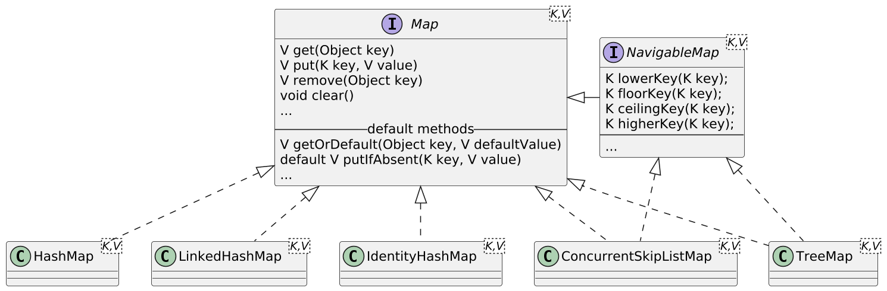
Collection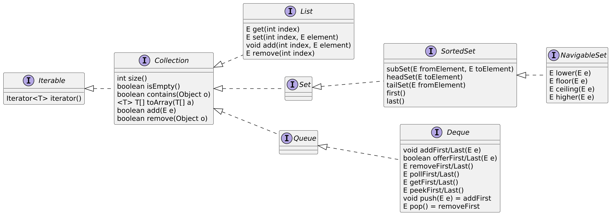
Iterable: интерфейс, умеющий участвовать в for loop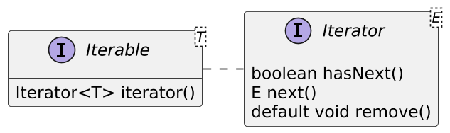
| |
ListIterator: расширение для List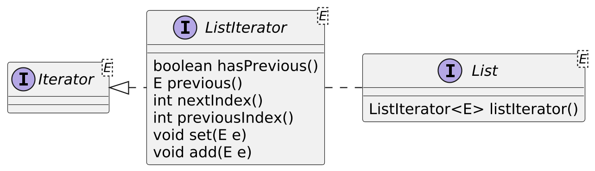
Map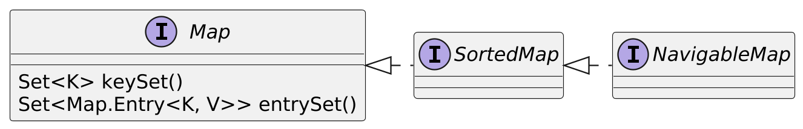
Comparable и Comparatorpublic interface Comparable<T>{
/**
* @param o the object to be compared.
* @return a negative integer, zero, or a positive integer as this object
* is less than, equal to, or greater than the specified object.
*/
int compareTo(T o);
}
/*Применяется в случае, если сравниваемые объекты
не реализуют Comparable*/
public interface Comparator<T> {
int compare(T o1, T o2);
}Используйте интерфейсы для типов переменных и аргументов в методах. Не привязывайтесь к конкретным реализациям.
Помимо возможности подмены реализаций, существуют суррогатные коллекции, например, важные частные случаи:
//ИММУТАБЕЛЬНЫЕ
//Пустые //Из одного элемента
Collections.emptyList(); Collections.singletonList(o);
Collections.emptySet(); Collections.singleton(o);
Collections.emptyMap(); Collections.singletonMap(k,v);Collections.unmodifiableList(List<? extends T> l);
Collections.unmodifiableSet(Set<? extends T> s);
Collections.unmodifiableMap(Map<? extends K,
? extends V> s);
...В классе Collections (как и в классе Arrays) вообще очень много всего полезного!
//Из заданных элементов
List.of(a, b, c...);
Set.of(a, b, c...);
Map.of(k1, v1, k2, v2...);MapN: иммутабельная хэшмапаMap.of(1, 'A', 2, 'B', 3, 'C', 4, 'D'));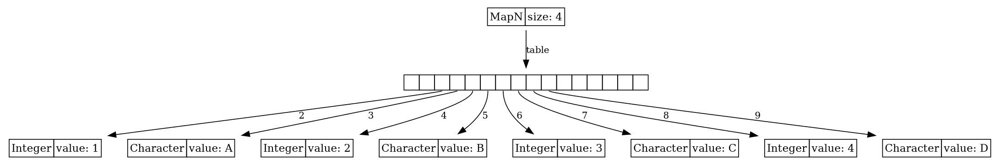
(Визуализация внутреннего устройства структур данных сделана с помощью Lightweight Java Visualizer.)
MapN: linear probing Map.of("aaa", 1, "abB", 2, "bBa", 3)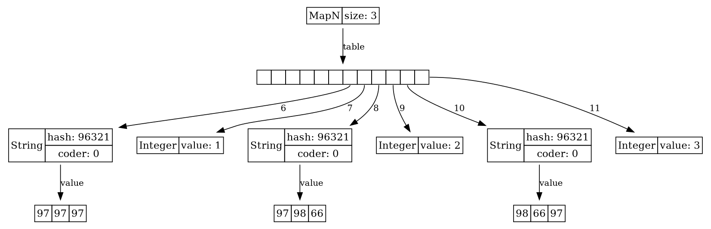
ArrayListList<String> list = new ArrayList<>();
list.add("foo"); list.add("bar"); list.add("baz");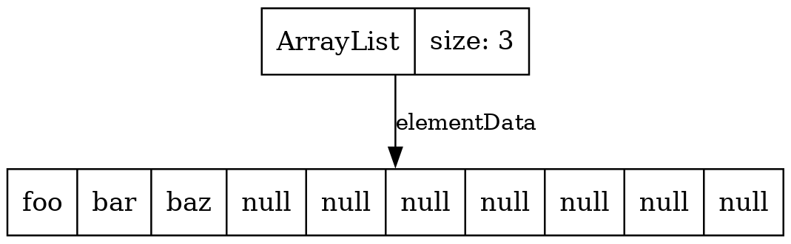
ArrayList: геометрический рост буфераКогда внутренний массив заполняется, увеличиваем ёмкость в фиксированное число раз \(g > 1\), а не на фиксированное число ячеек.
Копирование дорого, но происходит всё реже: ёмкость растёт пропорционально \(1,\ g,\ g^2,\ g^3,\ \ldots\)
Полные затраты на запись и копирование при добавлении \(N\) элементов ограничены величиной
где \(C\) — стоимость записи одного элемента, \(K = Cg/(g-1)\) не зависит от \(N\).
Значит, амортизированные затраты на одно добавление не превышают \(KN/N = K\): это \(O(1)\), хотя каждое расширение требует \(O(N)\).
ArrayListget(int index) is \(O(1)\) ← main benefit of ArrayList<E>
add(E element) is \(O(1)\) amortized, but \(O(n)\) worst-case since the array must be resized and copied
add(int index, E element) is \(O(n)\) (with \(n/2\) steps on average)
remove(int index) is \(O(n)\) (with \(n/2\) steps on average)
Iterator.remove() is \(O(n)\) (with \(n/2\) steps on average)
ListIterator.add(E element) is \(O(n)\) (with \(n/2\) steps on average)
LinkedList (implements List, Deque)List<Integer> list = new LinkedList<>();
list.add(1); list.add(2); list.add(3); list.add(4);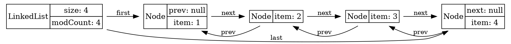
LinkedListImplements List and Deque
get(int index) is \(O(n)\) (with \(n/4\) steps on average)
add(E element) is \(O(1)\)
add(int index, E element) is \(O(n)\) (with \(n/4\) steps on average),
but \(O(1)\) when index = 0 ← main benefit of LinkedList<E>
remove(int index) is \(O(n)\) (with \(n/4\) steps on average)
Iterator.remove() is \(O(1)\) ← main benefit of LinkedList<E>
ListIterator.add(E element) is \(O(1)\) This is one of the main benefits of LinkedList<E>
Deque?ArrayDeque
Circular array
Более быстрый, чем LinkedList.
Deque<Integer> arrayDeque = new ArrayDeque<>(4);
arrayDeque.add(1); arrayDeque.add(2); arrayDeque.add(3);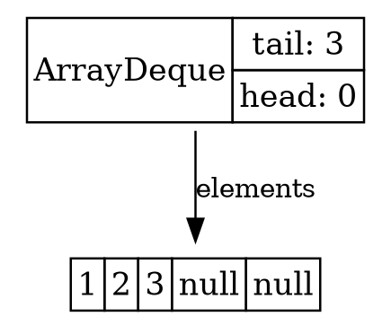
ArrayDeque arrayDeque.poll(); //returns 1
arrayDeque.poll(); //returns 2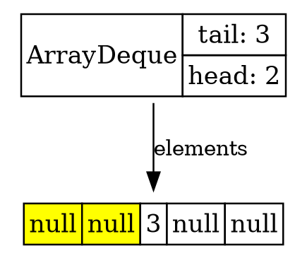
ArrayDeque arrayDeque.add(4); arrayDeque.add(5); arrayDeque.add(6);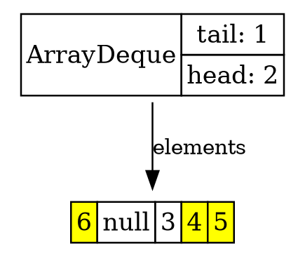
PriorityQueueПостановка в очередь с сортировкой по приоритету за счёт Comparable или Comparator.
List<Integer> list = IntStream.range(0, 16)
.boxed()
.collect(Collectors.toList());
Collections.shuffle(list);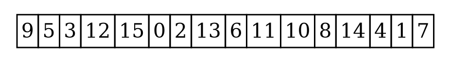
PriorityQueuePriorityQueue<Integer> q = new PriorityQueue<>(16);
q.addAll(list);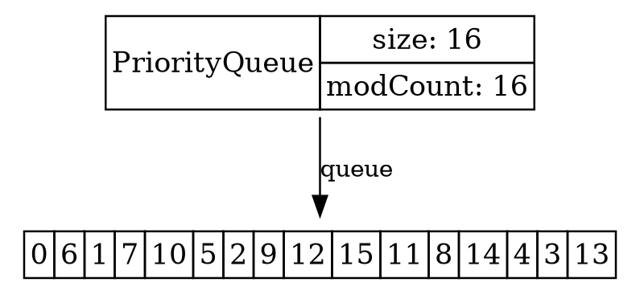
PriorityQueue: в чём фокус?Binary min-heap, инварианты:
\(q[n] \leq q[2n + 1]\)
\(q[n] \leq q[2n+2]\)
Следствие:
\(q[0] = \min(q)\)
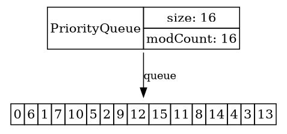
q.poll();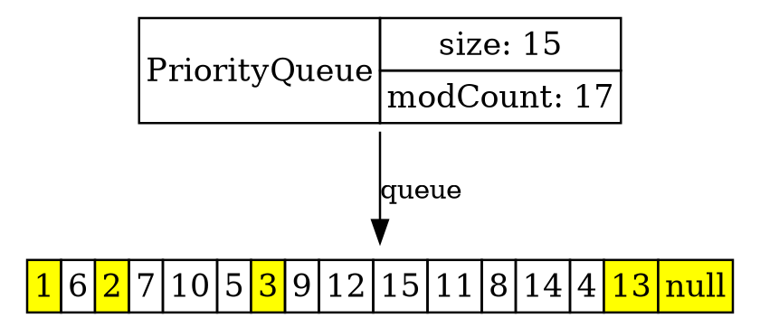
q.poll();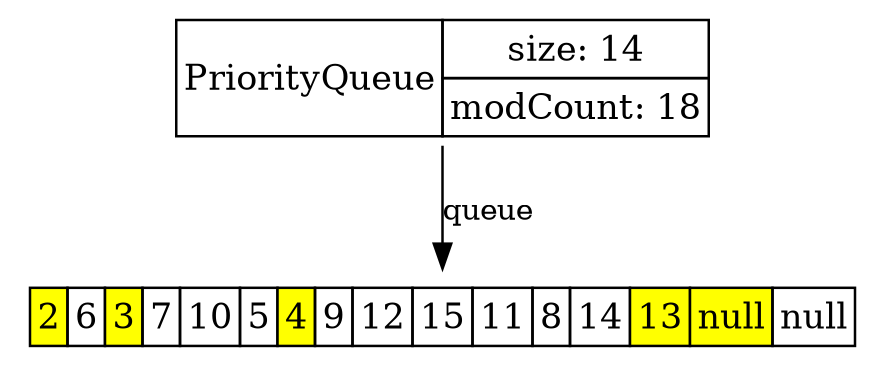
q.poll();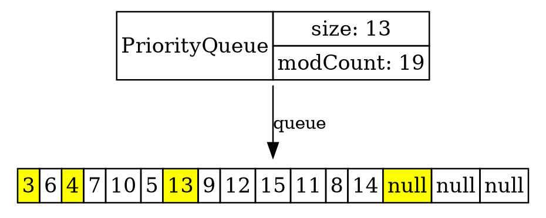
q.add(1);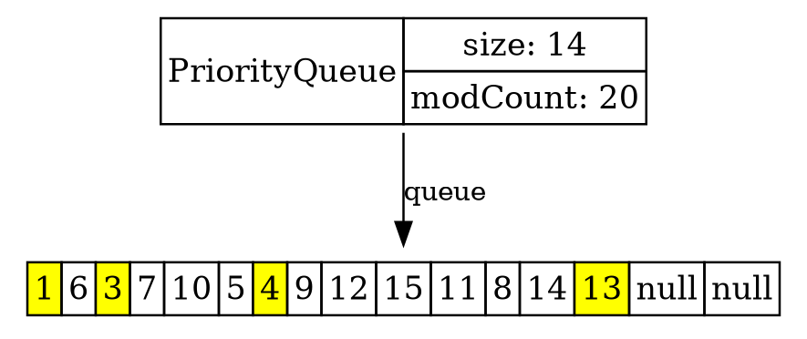
Теоретическая асимптотика не полностью описывает пригодность той или иной структуры данных: вмешивается ряд обстоятельств, таких как
частные «удачные» случаи и частота их использования,
эффективность использования кэша,
количество производимого «мусора»
и т. п.
ArrayList и ArrayDeque являются предпочтительным выбором реализации List и Deque в подавляющем большинстве случаев.
HashMap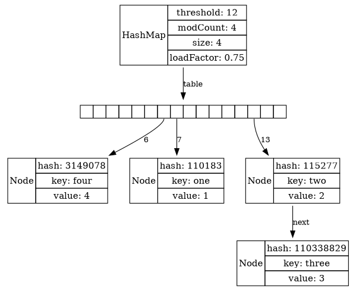
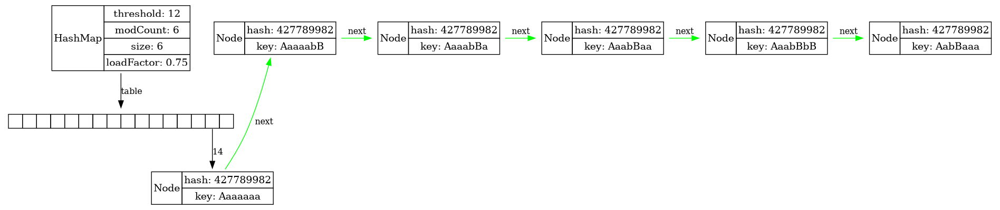
Длинная цепочка может привести к проблемам, если злоумышленник намеренно осуществляет коллизии.
При большом кол-ве коллизий на одной ячейке, если значение реализует Comparable, связный список заменяется на красно-черное дерево.
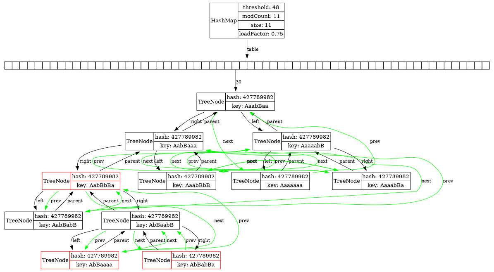
LinkedHashMap: почти готовый LRU кэш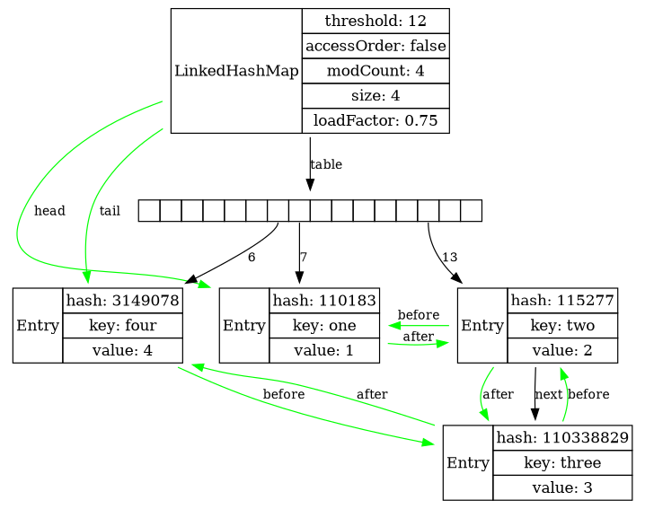
LinkedHashMap: режим access orderMap<String, Integer> map = new LinkedHashMap<>(5, 0.8f,
/*accessOrder:*/ true);
map.put("one", 1); map.put("two", 2);
map.put("three", 3); map.put("four", 4);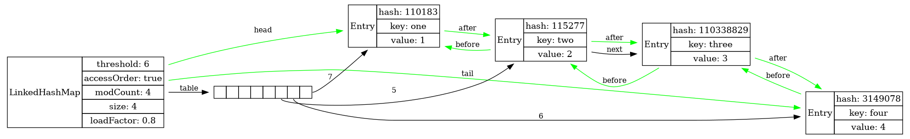
LinkedHashMap: режим access ordermap.get("two");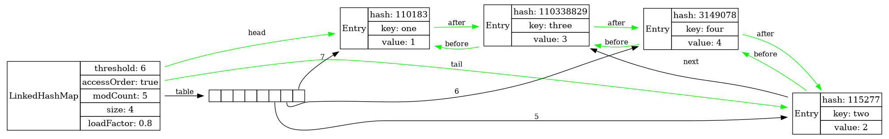
LinkedHashMap: выводыLinkedHahMap помнит порядок вставки элементов.
Хорош для LRU-кэширования.
Хорош для хранения настроек вида «ключ-значение», задаваемых текстом.
IdentityHashMap — ключи сравниваются по ==, а не по equals().
WeakHashMap — значения могут быть собраны сборщиком мусора, если не используются где-то ещё.
TreeMap: красно-чёрное дерево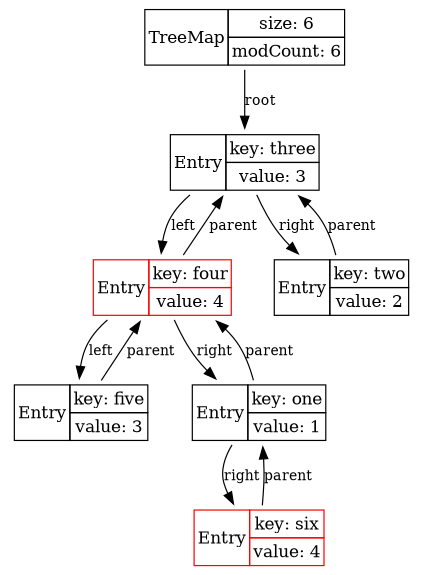 |
|
Инварианты КЧД:
Корень — чёрный.
null—«листья» в конце ветвей считаются чёрными.
Оба потомка каждого красного узла — чёрные.
Любой простой путь от узла-предка до листового узла-потомка содержит одинаковое число чёрных узлов.
Следствие:
Путь от корня до самого дальнего листа (ЧКЧКЧ…) не более чем вдвое длиннее, чем до самого ближнего (ЧЧЧ…)
TreeMap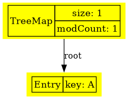
TreeMap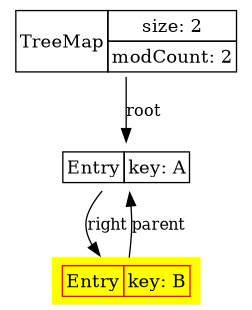
TreeMap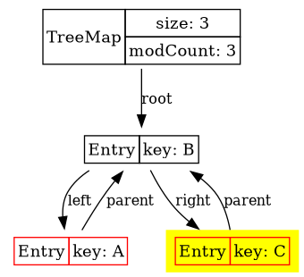
TreeMap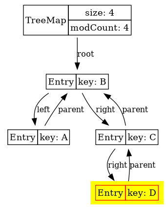
TreeMap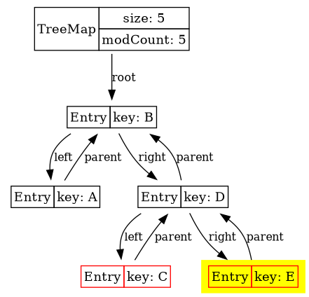
TreeMap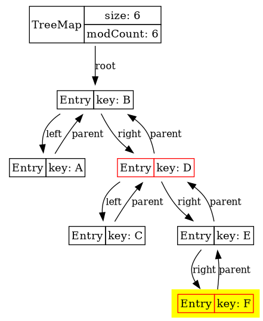
TreeMap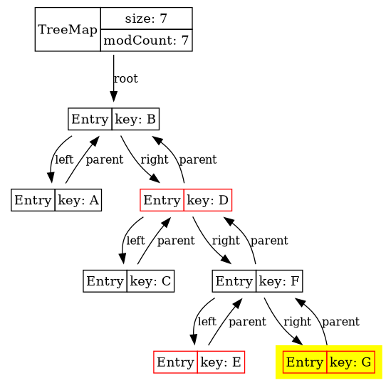
TreeMap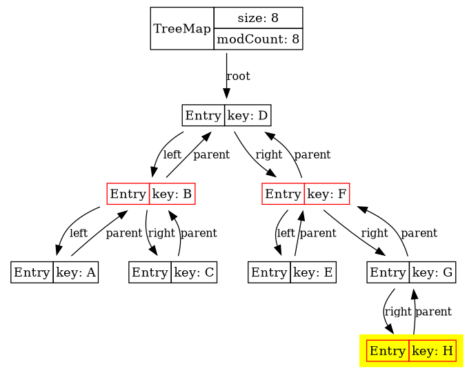
ConcurrentNavigableMap: то же самое, но thread-safe?ConcurrentSkipListMap
В комментариях к исходному коду CSLM обнаруживаются:
две научные статьи
книга
три докторских диссертации
ConcurrentSkipListMap: идея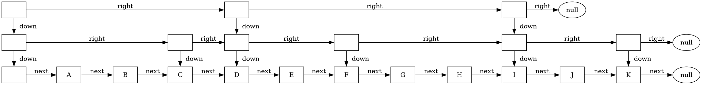
Коллекции, в которых объект может присутствовать только один раз.
Реализованы на базе соответствующих Maps:
HashSet,
LinkedHashSet,
TreeSet.
private transient HashMap<E,Object> map;
// Dummy value to associate with an Object in the backing Map
private static final Object PRESENT = new Object();
public boolean add(E e) {
return map.put(e, PRESENT)==null;
}EnumSet — на базе единственного значения типа long. Используйте только его для enum-ов!
BitSet — массив long-ов.
| |
| |
поиск min/max
копирование
разворачивание «задом наперёд»
объединение и разность
… — ищите и найдёте!